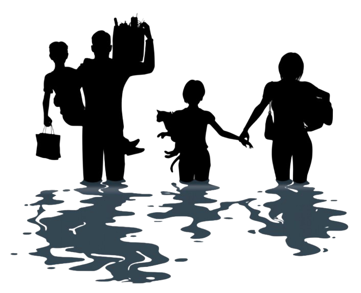
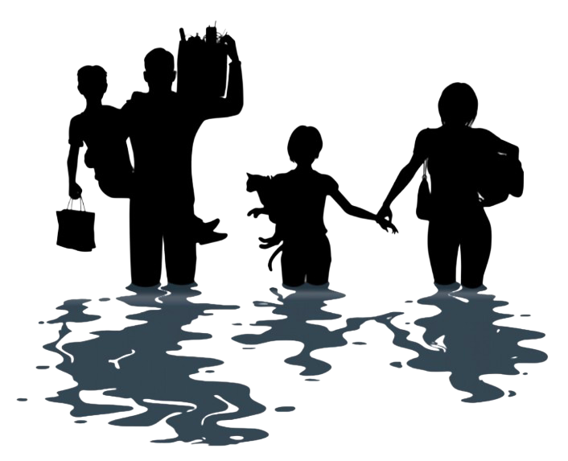

- Properly dispose of trash and avoid dumping in canals
- Segregate waste and support recycling programs
- Participate in barangay clean-up drives and river cleanups
- Report blocked drainages to local authorities
|
- Regular maintenance and dredging of drainage canals
- Improve waste management infrastructure
- Implement stricter penalties for illegal dumping
- Conduct awareness campaigns in schools and communities
|

 
